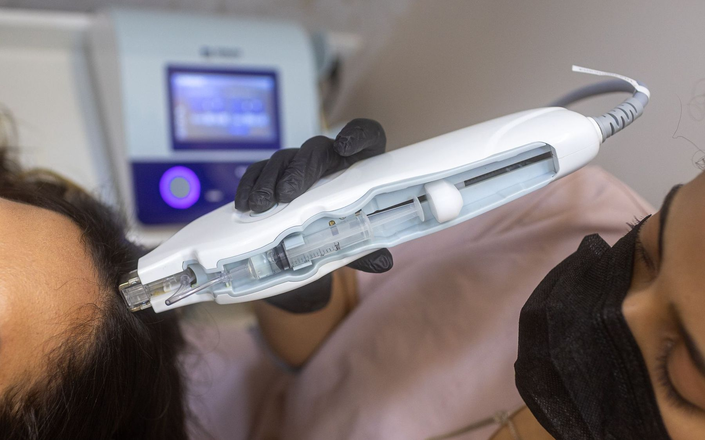
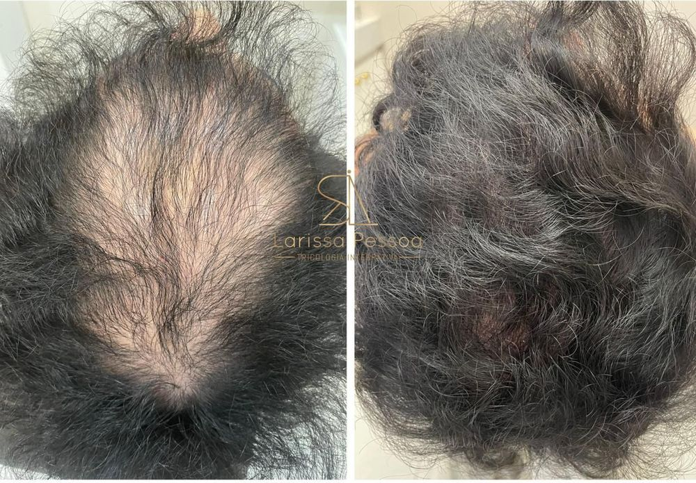
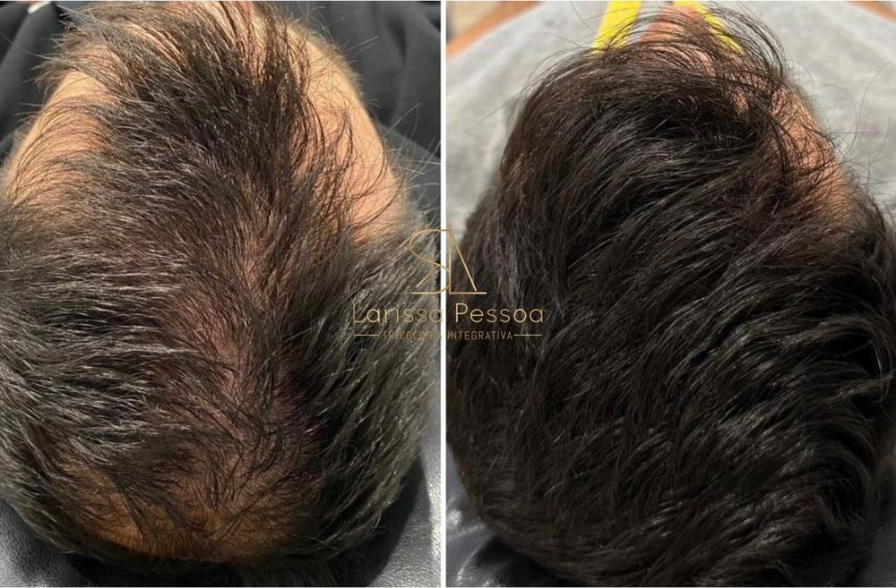
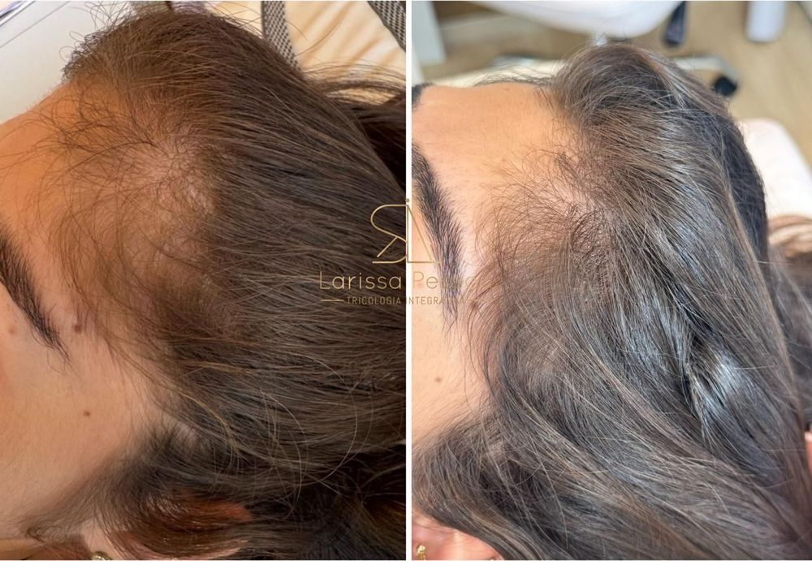
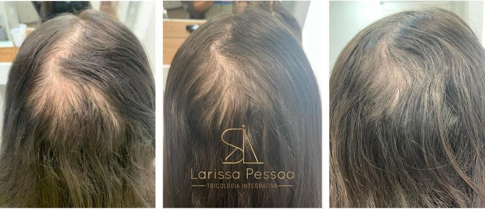
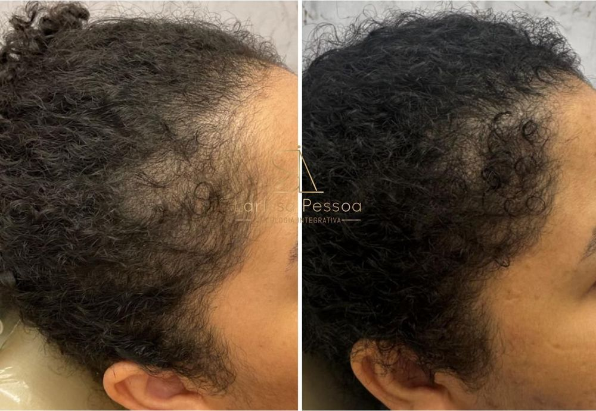
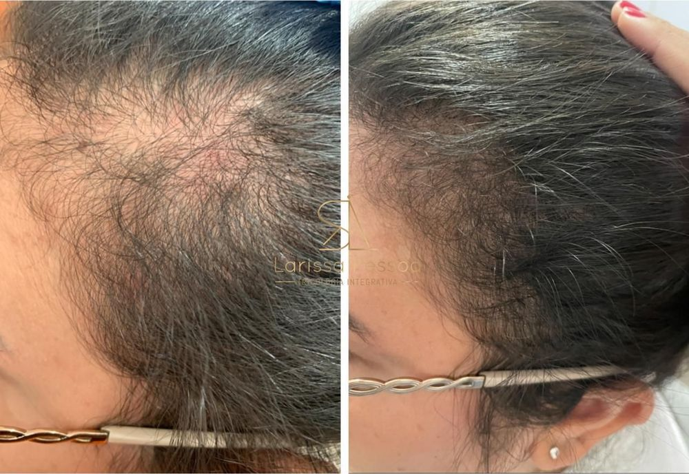

Primeiro, a sua história
Você conta quando a queda começou, o que mudou na rotina e o que espera do tratamento.
Larissa Pessoa Tricologia agora é Hairzenit. A nova clínica chega em março de 2027. Acompanhe a obra →
A Hairzenit é a clínica de tricologia fundada por Larissa Pessoa para tratar queda, calvície e perda de densidade capilar.
Uma nova clínica está sendo construída. Enquanto isso, nossa equipe segue atendendo em Copacabana e Cabo Frio.


Análise folicular ampliada em até 200 vezes

Hairzenit vem de zênite, o ponto mais alto. É de cima que a tricologia examina o couro cabeludo: a risca, a coroa e a densidade de uma só vez.
Toda consulta começa assim, com tricoscopia digital que amplia os fios em até 200 vezes.

Passe o cursor pela lista ou toque no desenho para ver onde cada sinal aparece.
06 QUADROS CLÍNICOS PRINCIPAIS
Cada sinal tem uma página com causas, exames e tratamentos. Todos os tratamentos →
Depois de anos atendendo pacientes com queda e calvície, Larissa Pessoa decidiu transformar sua experiência em uma clínica especializada, com equipe, método e estrutura dedicados à saúde capilar.

Larissa já passou pela queda de cabelo e conhece o impacto dela na autoestima. Essa experiência orienta o jeito como cada paciente é recebido. A história da marca →
Você conta quando a queda começou, o que mudou na rotina e o que espera do tratamento.

O couro cabeludo é examinado com ampliação de até 200 vezes: inflamação, descamação, afinamento, unidades foliculares vazias.

As imagens ampliadas aparecem na tela, e cada achado é explicado durante a consulta.

Quando a causa pede investigação, são solicitados exames: ferro, vitaminas, tireoide, hormônios.

Em casa, no consultório ou nos dois, com tecnologias escolhidas para a causa: laser e LED, MMP, microinfusão, Mesoject.

Os resultados costumam aparecer entre 60 e 120 dias, conforme a causa e o protocolo.

A evolução é fotografada e comparada a cada retorno, e o plano é ajustado a cada etapa.
Registros padronizados sob o mesmo ângulo e iluminação, demonstrando a recuperação de cobertura e densidade sem intervenção cirúrgica.
Agendar uma avaliaçãoPacientes atendidos pela equipe, fotografados de cima, antes e depois do tratamento. Os resultados variam de pessoa para pessoa.







Uma clínica construída para a saúde capilar. Enquanto a obra avança, seguimos atendendo em Copacabana e Cabo Frio.
Duas formas de consulta: com a equipe Hairzenit ou com Larissa Pessoa.
Copacabana e Cabo Frio, com hora marcada. WhatsApp (21) 97278-0789.